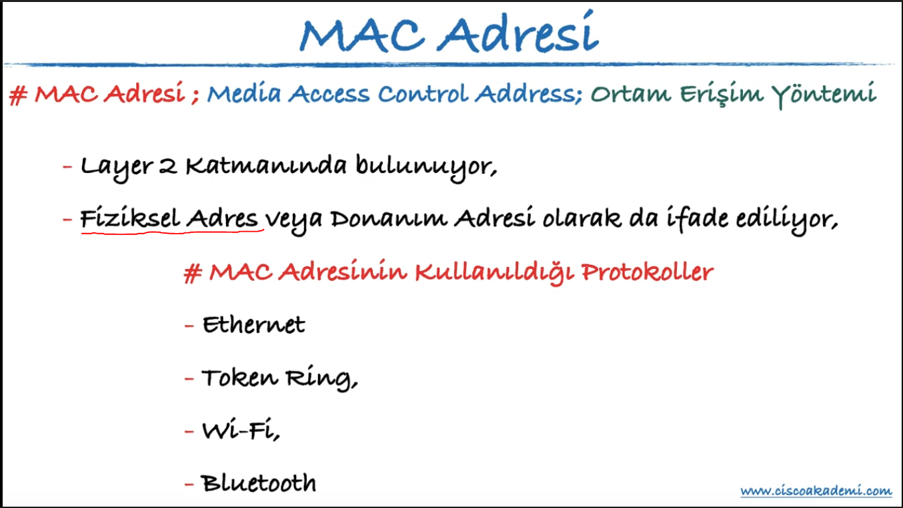
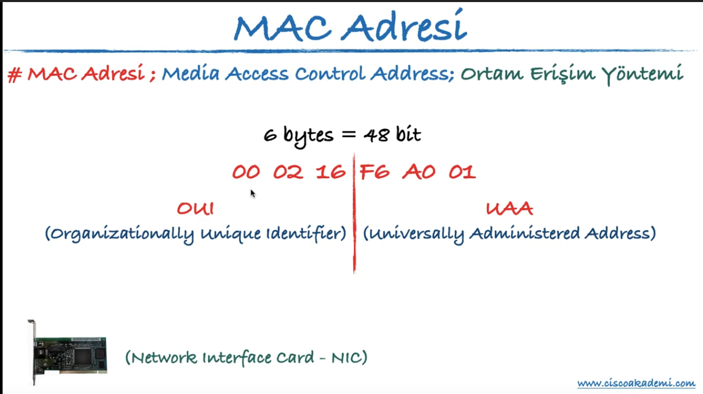
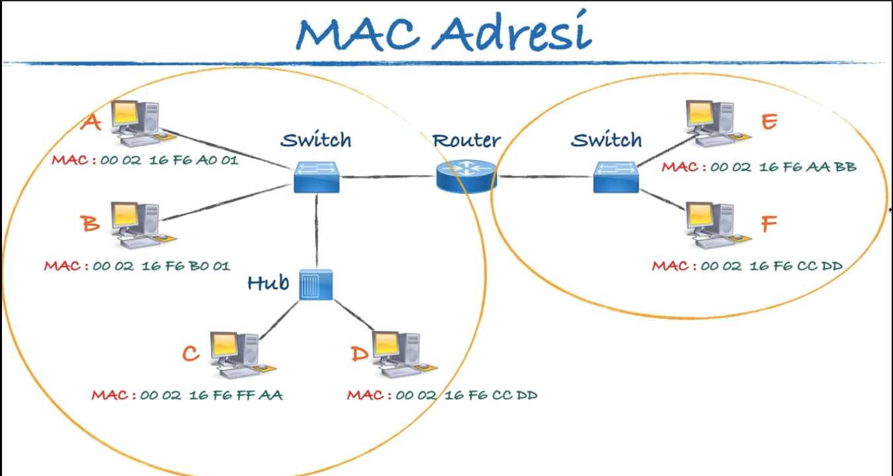
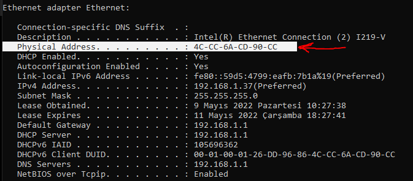
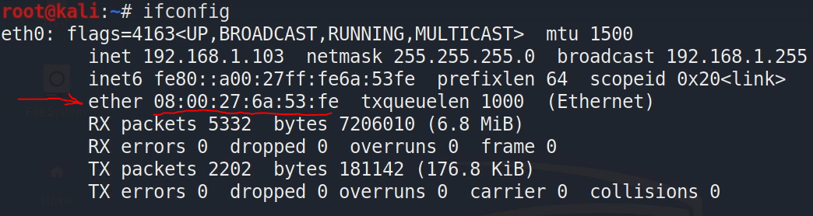
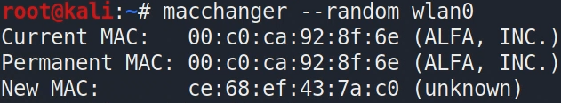

MAC : Layer 2 yani Data Link Layer katmanında bulunur. MAC aslında Fiziksel adres olarak ifade edilir.
MAC görevi: Local network'de (yerel ağda) cihazların birbirleriyle haberleşmesini sağlar.
Aynı ağda bulunan cihazlar ip adresiyle değil!
MAC adresleriyle haberleşirler, iletişim kurarlar.

Aşağıda ki şekilde de belirtildiği üzere MAC adresleri her bir donanım için unique yani benzersiz şekilde verilmiştir.
İlk 3 byte(24 bit) donanımı üreten üretici firmayı temsil eder o firmanın kodudur. Diğer 3 byte(24 bit) firma tarafından üretilen donanıma atanan unique olarak atanan bir değer. Böylelikle bu adres benzersiz (unique) olmuş oluyor.

Aynı ağda bulunan cihazlar ip adresiyle değil! MAC adresleriyle haberleşirler, iletişim kurarlar. Aynı ağda bulunan bu cihazlar iletişime geçmeden önce birbirlerinin MAC adreslerini öğrenmek için arp paketi gönderirler.
Arp paketi onlara birbirlerinin MAC adreslerini döndürür ve artık bu sayede MAC adresleri üzerinden iletişime geçebilirler.

Windows da cihazın MAC adresini öğrenmek için:
"ipconfig -all" veya "ipconfig /all" komutu yazılır.

Buradan da görüleceği gibi Physical Address olarak belirtilen aslında MAC adresidir.
Linux de MAC adresi öğrenmek için:
“ifconfig” komutu yazılır.

burada ki “ether” yazan kısımda olan adres MAC'dir.
NOT: MAC adresi local network'ün dışına taşınan bir değer bir adres değildir.
Aşağıda ki komutları yazarak MAC adresini kendimiz vereceğimiz bir değer ile değiştirebiliriz.
MAC Adresi değiştirmeMAC adresini macchanger ile değiştirme"ifconfig wlan0 down" komutundan sonra (wlan0, eth0 duruma göre hangisini değiştirmek istiyorsak) aşağıdaki komut ile random bir MAC adresini macchanger ile verebiliyoruz
bundan sonra “ifconfig wlan0 up” yapmayı unutma.